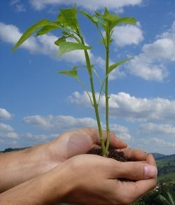
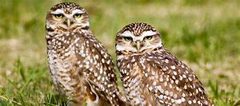
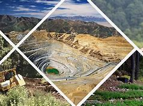
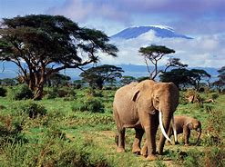

¿QUE ES LA ECOLOGIA? "SERES VIVOS Y SU AMBIENTE"
Ecologia es el estudios de la relacion entre los seres vivos y su ambiente, especificamente se ocupa de analizar la influencia de unos obre otros. Cuando hablamos de ambiente estamos considerando ciertas propiedades fisicas que se definen como factores abioticos locales, y esto incluye el clima, la geologia y organismos que conviven en dicho ambiente. La ecologia es un concepto amplio de abordar desde nuestra relacion con el planeta hasta las pequeñas practicas cotidianas que tienen un menor impacto sobre el ambiente.

Se tiende a utilizar el concepto de biotopo para considerar a la totalidad de los factores abioticos en un area. Cuando se evalua en su conjunto al biotopo y a los seres vivos de un entorno (animales, vegetales, protistas, moneras y hongos) se prefiere emplear el vocablo ecosistema. Asi, por ejemplo, un simple charco es un ecosistema completo, con sus factores abioticos (agua, aire, suelo del fondo) y bioticos. La sumatoria de distintos ecosistemas interdependientes conforma los llamados biomas. En este modelo, una jungla tropical es un gran bioma en el que se confunden variados ecosistemas. Finalmente, la suma de todos los biomas del planeta da lugar a la biosfera.
En este sentido, resulta interesante destacar que, etimologicamente, ecologia significa "estudio del hogar", entendiendo hogar como entorno o habitat en el que los seres vivos se desarrollan. La raiz de este vocablo, de hecho, es similar a la de conceptos tan distintos como el de "economia". El estudio de la ecologia involucra herramientas provenientes de ciencias tan versatiles como la matematica y la estadistica, por un lado, y la biociencias y la geologia, por el otro. Si bien cuando hablamos de esta rama de la biologia tendemos a asociarla a la preservacion del medio ambiente y de las especies vegetales y animales, el ecologia consiste en una ciencia multidisciplinaria que se vale de otras disciplinas y que a su vez tiene derivaciones tales como la ecologia microbiana, de poblaciones y comunidades, de comportamiento, etoecologia, ecologia matematica y otras. No puede olvidarse que la ecologia se integra también con las ciencias de la salud. Por un lado, las modificaciones en biomas y ecosistemas provocadas por efectos deletereos de la accion del hombre motivan la aparicion o potenciacion de diversas afecciones, entre las que sobresalen las enfermedades transmisibles por vectores y los resultados de la contaminacion ambiental. Por el otro, se tiende a considerar hoy dia un enfoque ecologico de la salud en distintos aspectos. Asi, se reconoce al intestino humano como un verdadero ecosistema, con sus factores abioticos y su microflora local que constituye el factor biotico.

Ciertos terminos derivados de la ciencias de la ecologia (por ejemplo, la huella ecologica), constituyen en la actualidad indicadores del impacto sobre el planeta que tiene determinado modo de vida. Consecuentemente, cuando se habla de sostenibilidad o sustentabilidad se hace referencia al equilibrio entre las practicas de una especie y su entorno. La agroecologia, entre otras, busca aplicar los principios de la ecologia al diseño y desarrollo de sistemas agricolas sustentables. El ecologismo o movimiento ecologista defiende la proteccion del medio ambiente como critica de las practicas humanas derrochadoras, descuidadas e irresponsables.
Distintas entidades y organizaciones de caracter local o internacional son resultado de este movimiento, como pueden considerarse Greenpeace, World Wildlife Fund, y muchas otras.

Entre los temas que estan asociados actualmente con la ecologia pueden contarse la preservacion de especies en extincion, el cambio climatico y la conservacion del agua y otros recursos naturales.
Esta concepcion de la importancia de la evaluacion cientifica de la accion de la humanidad sobre el planeta no es nueva, si bien ha alcanzado un mayor despliegue en los ultimos 50 años y, en particular, ha tomado un mayor impulso a partir de las decadas mas recientes. En este contexto, las organizaciones no gubernamentales han desempeñado un papel relevante que ha superado al de numerosos gobiernos. No obstante, se reconoce la participacion de distintas naciones en el proceso de conservacion ecologico, en el contexto de la creacion de reservas naturales y parques nacionales en los cuales no es posible inflingir daño a los componentes abioticos o bioticos de ecosistemas y biomas. Finalmente, distintos organismos internacionales, entre los que se destacan la FAO y la UNESCO, promueven tambien una explotacion racional de los recursos para mantener un enfoque de la ecologia que resulte apropiado para salvaguardar a todas las formas de vida de la Tierra.

VIDEO DE APOYO